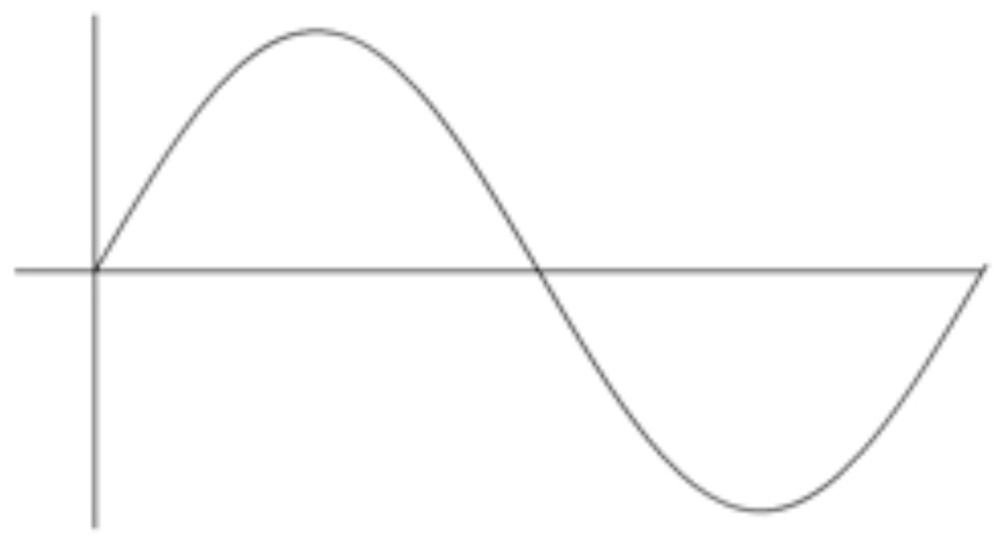

### NO CLASS FRIDAY - You are legally obligated to take the time to do something kind to yourself --- # Sound, Computers, and ASR ### Will Styler - LIGN 6 --- ### How do acousticians say hello? - They wave! --- ### Today's Plan - Computers and Sound - Turning Signals into features - Automatic Speech Recognition --- ### We've got a fundamental problem, to start --- ### Computers don't do waves <img class="r-stretch" src="phonmedia/sampling_raw.jpg"> 010001110010101000100101101010101010 --- ### Sound is analog, computers are digital - How do we deal with that? --- ### Quantization ('Sampling')  --- ### Quantization ('Sampling') <img class="r-stretch" src="phonmedia/sampling_quantized.jpg"> --- ### Quantization ('Sampling') <img class="r-stretch" src="phonmedia/sampling_measures.jpg"> --- ### Analog-to-digital conversion - Sample the wave many times per second - Record the amplitude at each sample - The resulting wave will faithfully capture the signal --- ### How often do we sample? - This is called the 'Sampling Rate' - Measured in samples per second (Hz) --- ### Sampling Rate <img class="r-stretch" src="phonmedia/sampling_quantized.jpg"> --- ### Sampling Rate <img class="r-stretch" src="phonmedia/sampling_highrate.jpg"> --- ### Sampling Rate (low rate) <img class="r-stretch" src="phonmedia/sampling_lowrate.jpg"> --- ### Sampling Rate (awful rate) --- ### Bad sampling makes for bad waves <img class="r-stretch" src="phonmedia/sampling_undersampled.jpg"> --- ## Nyquist Theorem The highest frequency captured by a sample signal is one half the sampling rate --- ### Sampling Rates (Shpongle - 'Nothing is something worth doing') 44,100 Hz <audio controls src="phonmedia/nothingsomething44100.wav"></audio> 22,050 Hz <audio controls src="phonmedia/nothingsomething22050.wav"></audio> 11,025 Hz <audio controls src="phonmedia/nothingsomething11025.wav"></audio> 6000 Hz <audio controls src="phonmedia/nothingsomething6000.wav"></audio> --- ### Sampling Rates (Shpongle - 'Nothing is something worth doing') 44,100 Hz <audio controls src="phonmedia/nothingsomething44100.wav"></audio> 6000 Hz <audio controls src="phonmedia/nothingsomething6000.wav"></audio> 3000 Hz <audio controls src="phonmedia/nothingsomething3000.wav"></audio> 1500 Hz <audio controls src="phonmedia/nothingsomething1500.wav"></audio> 800 Hz <audio controls src="phonmedia/nothingsomething800.wav"></audio> --- ### Different media use different sampling rates - Radio was historically less than this - CDs are at 44,100 Hz - DVDs are at 48,000 Hz - High-End Audio DVDs are at 96,000 Hz - Some people want 192,000 Hz - Likely they are dolphins --- ### The 'Bit Depth' controls how much detail we store about each amplitude - 16 bits gives 65,563 levels, which is the default in modern machines --- ### Here's a talk about this I did which goes into more detail - Covers compression, bit depth, mp3, and more - <https://www.youtube.com/watch?v=o1OADV71g1Y> - Also LIGN 168! --- ### AD Conversion now yields a signal that the computer can read - ... but how does it interpret it? --- ### Well, much like the rest of us! <img class="r-stretch" src="phonmedia/noisebbspectrogram.jpg"> --- ### There are more problems - We're going to use Neural Networks - Or, historically, hidden markov models - ... but what are the algorithms looking at? --- ### Putting in the waveform itself was historically a poor choice - It's cheap and easy - NNs weren't amazing at estimating frequency-based effects - Recent approaches are changing that (c.f. [Wav2Vec](https://ai.facebook.com/blog/wav2vec-20-learning-the-structure-of-speech-from-raw-audio/)) - Important parts of the signal live only in frequency band info - We want to be able to give it all the information we can, in the most useful format! --- ### Why not linguistically useful features? <img class="r-stretch" src="phonmedia/noisebbspectrogram.jpg"> --- ### Linguistically useful features benefits - They reflect speech-specific understanding - They treat speech as "special" - They reflect articulatory facts - They're efficient - Optimal informativeness per feature - They're very transparent - We know what each of them means --- ### Linguistically useful features downsides - Slow to extract - Require specialized algorithms to extract - They treat speech as "special" --- ### For research, linguistically useful features are great - ... but in production, we don't care --- ### We don't need transparent or minimal - We're plugging it into a black box - We're happy to plug in hundreds of features, if need be - We'd just as soon turn that sound into a boring matrix --- ### Let's get that algorithm a Matrix - Algorithms love Matrices --- # Mel-Frequency Cepstral Coefficients (MFCCs) --- ### We're not going deep here - This is a lot of signal processing - We're going to teach the idea, not the practice --- ### MFCCs <img class="r-stretch" src="phonmedia/mfcc.jpg"> --- ### MFCC Process - 1: Create a spectrogram - 2: Extract the most useful bands for speech (in Mels) - 3: Look at the frequencies of this banded signal (repeating the Fourier Transform process) - 4: Simplify this into a smaller number of coefficients using DCT - Usually 12 or 13 --- ### MFCC Input <img class="r-stretch" src="phonmedia/noisewaveform.jpg"> --- ### MFCC Output <img class="r-stretch" src="phonmedia/noise_mfcc.jpg"> --- ### So, the sound becomes a matrix of features - Many rows (representing time during the signal) - N columns (usually 13) with coefficients which tell us the spectral shape - It's black-boxy, but we don't care. - We've created a Matrix --- <img class="r-stretch" src="humorimg/whoa_neo.jpg"> --- ### Now we've got a matrix representing the sound - ... which captures frequency information, according to our perceptual needs --- ### It's Neural Network time! <img class="r-stretch" src="img/neuralnetwork.jpg"> --- ... Wait, hold on. - ### What are we actually recognizing? --- ### What are we recognizing in speech recognition? - We need to give the NN labeled data - [Chunk of Sound MFCCed] == [Labeled Linguistic Info] - (for Many many many many tokens) - What level do we want to recognize at? --- ### Possible levels of recognition - Sentences? - Words? - Letters? - Phones? - Diphones? --- ### Sentences - Why are sentences a bad idea? --- ### Words <img class="r-stretch" src="phonmedia/noisebbspectrogram.jpg"> "Noise" --- ### Word Recognition Pros - Handles larger patterns of coarticulation - Captures word specific effects - Robust to short duration noise - Word annotation is *way* cheaper --- ### Word Recognition Cons - What about novel words? - Training data becomes much more sparse - Can we really learn nothing about "boy" from "soy"? --- ### Grapheme-based Recognition - You could use the orthography itself as the 'pronunciation dictionary' and recognize letters ('graphemes') - Mapping straight from letters to speech signal - This is actually happening now! - [Here's one example](https://aclanthology.org/2020.sltu-1.7.pdf) and [another](http://www.interspeech2020.org/uploadfile/pdf/Wed-2-8-8.pdf) - Here's another production system you can play with: [HuggingFace2](https://huggingface.co/docs/transformers/model_doc/wav2vec2#transformers.Wav2Vec2ForCTC) --- ### Grapheme-based Pros - The data are much easier to get - Subtitles, transcripts, etc - More able to handle new words and names - It can guess how 'Haligtree' or 'Maliketh' sound without dictionary entries - **You don't need dictionaries to map from words to phones!** --- ### Grapheme-based Cons - Grapheme-to-phone conversion is very language specific - It's often roughly and thoroughly arbitrary - Some languages' writing systems have less mutual information with spoken language - It throws away data for many homograph differences (e.g. record, villa, does) --- ### Phones <img src="phonmedia/noise_phones.jpg"> --- ### Phone Recognition Pros - The most basic unit, so training data is rich - Can (theoretically) work for any language - Can still capture unknown words - "Fuzzy matching" --- ### Phone Recognition Cons - Annotation is brutally expensive - Coarticulation is problematic - Phone-level recognition is overkill for many contexts --- ### Diphones <img src="phonmedia/noise_diphones.jpg"> --- ### Diphone Recognition Pros - Coarticulation becomes a feature, not a bug - Still very basic, so all training data provides data - Can still (theoretically) work for any language - ... but patterns of coarticulation differ - Can still capture unknown words via Fuzzy matching --- ### Diphone Recognition Cons - Still stupidly expensive to annotate - Still overkill in many contexts --- ### In practice, many systems use diphones - [CMU's Sphynx does](https://cmusphinx.github.io/) - As do many others - Triphones are often a possibility --- ### ... but modern systems are often going waveform-to-grapheme - This is absolutely wild --- ### So, we can now train a system - Capture sounds and annotate them as diphones or words - MFCC them, or read in the waveform alongside word labels, and feed them into a neural network as training data - Then later, feed new data in and get back a list of phones (or words), which you can use to predict which words were intended! --- ### That's a tricky step right there - Why? --- ### Your ASR system is only as good as your dictionary and/or training data - "For shizzle, Bashira" - "Mel Frequency Cepstral Coefficient" - "Differentiating Theta and Eth" - "Take Caminito Santa Fe, then Mira Mesa into La Jolla" --- ### Users have very specific matches they expect --- ### "Hey Siri play songs by the Bedsit Infamy" - <img class="r-stretch" src="img/bedsitting.png"> --- ### "Hey Siri play songs by the Bedsit Infamy" <img class="r-stretch" src="img/bedsit.png"> --- ### How do we test the system? --- ### Like this <https://dictation.io/speech> --- ### Wrapping Up - Computers can learn to do the wave - MFCCs turn beautiful sounds into opaque, useful matrices - Speech Recognition often uses diphones - You're only as good as your dictionary --- ## For next time - **NO CLASS FRIDAY** - Why is speech recognition so damned hard? --- <huge>Thank you!</huge>